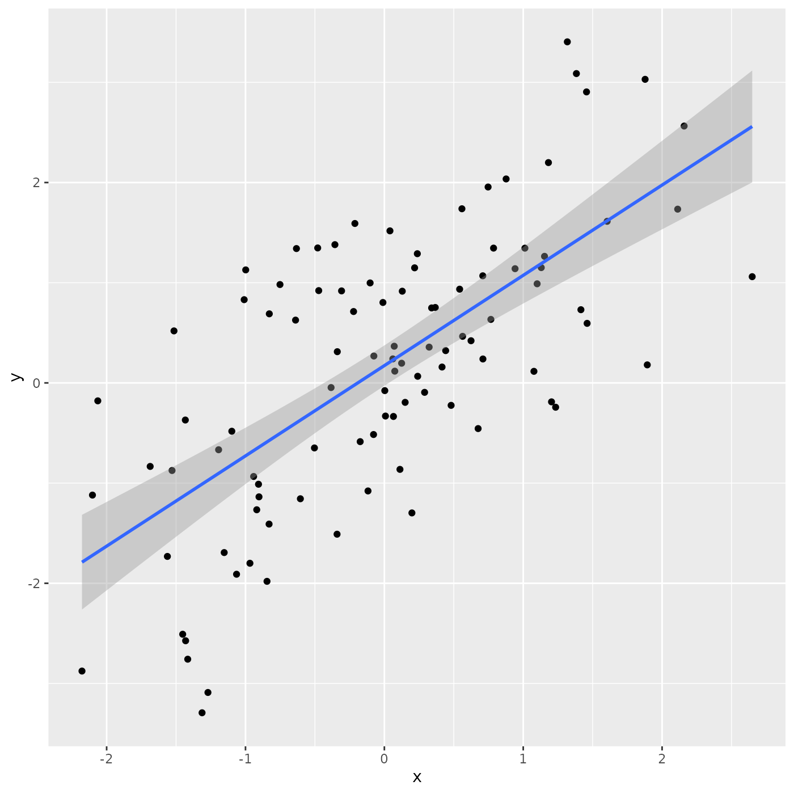

Connecting to the CCR
We’ll use the UB CCR computer cluster for the workshop. This (hopefully) simplifies initial steps in ‘getting going’, while introducing the main resource available when your desktop is not sufficient. See the appendix if you would like to install R and RStudio on your own laptop.
Some additional resources:
Visit and sign in, using your UB id, from a Roswell Park or UB network: https://ondemand.ccr.buffalo.edu

The next screen will ask for your UB password, and two-factor authentication.
From CCR to RStudio
-
Use your browser to navigate to https://ondemand.ccr.buffalo.edu/. Look under the “GUIs” section, and choose ‘RStudio Server’.

-
Provide details on the next screen, then click ‘Launch’

- ‘Cluster’: choose “Faculty - privately owned nodes” (these are ‘Roswell’ nodes)
- ‘Slurm account’: choose your user name.
- ‘Partition’: choose ‘rpci’.
- ‘Quality of Service (QOS)’: choose ‘rpci’
- ‘Number of hours requested’: choose 2; you’ll be unceremoniously kicked off after this number of hours, so save any work-in-progress.
-
Clicking the ‘Launch’ button puts your request for compute resources into a queue. You have to wait. Not too long. Hopefully.

-
Eventually the CCR finds resources for your job, and the queue status changes to ‘Running’, with a link to ‘Connect to RStudio Server’. Click on the link to get to your own session of RStudio.

RStudio
We’ll use RStudio extensively. To get going, copy and paste the following line into the ‘Console’
source('/projects/rpci/rplect/Rpg520/Rsetdirs.R')
Finally, tell RStudio about the changes made by the previous command by navigating to the lower-right panel, choosing the ‘gear’ widget’, and selecting ‘Go To Working Directory’, as in the following figure

OK, we are ready to go!
Feel free to customize your Rstudio session to your liking. There are many options.
Introduction to R
Essential R
A simple calculator
1 + 1
## [1] 2‘Vectors’ as building blocks
c(1, 2, 3)
## [1] 1 2 3
c("January", "February", "March")
## [1] "January" "February" "March"
c(TRUE, FALSE)
## [1] TRUE FALSEVariables, missing values and ‘factors’
age <- c(27, NA, 32, 29)
gender <- factor(
c("Female", "Male", "Non-binary", NA),
levels = c("Female", "Male", "Non-binary")
)Data structures to coordinate related vectors – the data.frame
df <- data.frame(
age = c(27, NA, 32, 29),
gender = gender
)
df
## age gender
## 1 27 Female
## 2 NA Male
## 3 32 Non-binary
## 4 29 <NA>Key operations on data.frame
-
df[1:3, c("gender", "age")]– subset on rows and columns -
df[["age"]],df$age– select columns
Functions
rnorm(5) # 5 random normal deviates
## [1] -1.400043517 0.255317055 -2.437263611 -0.005571287 0.621552721
x <- rnorm(100) # 100 random normal deviates
hist(x) # histogram, approximately normal‘Vectorized’ operations, e.g., element-wise addition without an explicit ‘for’ loop. The following creates a vector y by element-wise addition of the 100 elements of vector x with 100 random normal deviates.
y <- x + rnorm(100)x and y are related, so place them as columns in a data.frame(). There are 100 rows in the data.frame(), head() shows the first 6 rows.
df <- data.frame(x, y)
nrow(df)
## [1] 100
head(df)
## x y
## 1 1.1484116 0.45787371
## 2 -1.8218177 -2.38035966
## 3 -0.2473253 -0.78398863
## 4 -0.2441996 -0.01707247
## 5 -0.2827054 0.69574947
## 6 -0.5536994 -0.76258204There is a statistical relationship between y and x, specifically, y is equal to x plus some random noise. Visualize this using plot().
plot(y ~ x, df)It looks like a linear relationship; can we demonstrate this statistically? Use the lm() function to fit a linear model to the relationship between y and x:
fit <- lm(y ~ x, df)
fit # an R 'object' containing information about the
##
## Call:
## lm(formula = y ~ x, data = df)
##
## Coefficients:
## (Intercept) x
## 0.1445 0.9914
# regression of y on x
summary(fit) # statistical summary of linear regression
##
## Call:
## lm(formula = y ~ x, data = df)
##
## Residuals:
## Min 1Q Median 3Q Max
## -2.60626 -0.68808 0.01872 0.75720 2.41854
##
## Coefficients:
## Estimate Std. Error t value Pr(>|t|)
## (Intercept) 0.14453 0.10294 1.404 0.163
## x 0.99143 0.09948 9.966 <2e-16 ***
## ---
## Signif. codes: 0 '***' 0.001 '**' 0.01 '*' 0.05 '.' 0.1 ' ' 1
##
## Residual standard error: 1.028 on 98 degrees of freedom
## Multiple R-squared: 0.5034, Adjusted R-squared: 0.4983
## F-statistic: 99.33 on 1 and 98 DF, p-value: < 2.2e-16What about adding the regression line to the scatter plot? Do this by plotting the points, and then adding abline() to add the straight line implied by the linear model fit.
Packages
Packages extend functionality of base R. Can be part of the ‘base’ distribution (lm() is from the ‘stats’ package)…
stats::lm(y ~ x)
##
## Call:
## stats::lm(formula = y ~ x)
##
## Coefficients:
## (Intercept) x
## 0.1445 0.9914… or a package contributed by users to the Comprehensive R Archive Network (CRAN), or to Bioconductor or other repositories.
- CRAN – more than 20,000 packages (!) https://CRAN.R-project.org
- Use
install.packages()to install CRAN packages
- Use
- Bioconductor – 2289 packages for high-througput genomic data analysis https://bioconductor.org
- First install BiocManager from CRAN, then use
BiocManager::install()to install Bioconductor packages.
- First install BiocManager from CRAN, then use
A particularly common suite of packages is the ‘tidyverse’. To use the dplyr contributed CRAN package, load the package
A dplyr ‘tibble’ is like a ‘data.frame’, but more user-friendly
tbl <- tibble(
x = rnorm(100),
y = x + rnorm(100)
)
tbl # e.g., only displays the first 10 rows
## # A tibble: 100 × 2
## x y
## <dbl> <dbl>
## 1 0.0655 -0.335
## 2 -1.10 -0.482
## 3 -0.633 1.34
## 4 -2.06 -0.179
## 5 2.65 1.06
## 6 -1.15 -1.69
## 7 -0.341 -1.51
## 8 0.786 1.35
## 9 -1.27 -3.09
## 10 0.542 0.935
## # ℹ 90 more rowsThe ggplot2 package is often used for visualizing data
ggplot2 uses a ‘grammar of graphics’ to assemble a plot in layers
ggplot(tbl) + # use 'tbl' as a source of data for the plot
aes(x, y) + # use columns 'x' and 'y' for axes
geom_point() + # add x and y coordinates as points
geom_smooth(method = "lm") # add a regression line, with confidence bands
## `geom_smooth()` using formula = 'y ~ x'
How to Learn R
Help
-
Every function has a help page, e.g.,
?data.frame- Sections with ‘Description’, ‘Usage’, ‘Arguments’ (often with defaults), ‘Value’, ‘Examples’
- Can be quite difficult to follow, but are usually quite helpful.
Vignettes
-
Many packages have ‘vignettes’ that illustrate how the package can be used.
vignette(package = "dplyr") ## Vignettes in package 'dplyr': ## ## colwise Column-wise operations (source, html) ## base dplyr <-> base R (source, html) ## grouping Grouped data (source, html) ## dplyr Introduction to dplyr (source, html) ## programming Programming with dplyr (source, html) ## rowwise Row-wise operations (source, html) ## two-table Two-table verbs (source, html) ## in-packages Using dplyr in packages (source, html) ## window-functions Window functions (source, html) vignette(package = "dplyr", "dplyr")
Books
- Hands-on Programming with R introduces R programming. The Very Basics provides an elementary starting point.
- R for Data Science is a book-length web spanning with both introductory and more advanced topics. One of the authors, Hadley Wickham, is the author of the dplyr and ggplot2 packages, among others.
Web resources
- Google can be a great place to find general R resource, e.g., ‘how to do survival analysis in R’
-
StackOverflow is useful for trouble-shooting particular problems – ‘I try to fit a linear model with
lm(mgp ~ cyl, mtcars)but R says …, what am I doing wrong?’. - ChatGPT & friends can also be useful, especially if asking well-focused questions or, e.g., asked to ‘explain the following R code’ to help understand code someone else has written. I have almost always disagreed with the specific code ChatGPT generates; sometimes it simply does not work (e.g., use the package ‘X’, but ‘X’ is not a package), but more dangerous are the situations where code is syntactically correct but provides the wrong answer. Use, but with extreme care!
How to Learn Bioconductor
- Bioconductor packages are R packages so they have man pages and vignettes
- Most resources are available on the Bioconductor Website
Session information
For reproducibility, I record the software versions used to create this document
sessionInfo()
## R Under development (unstable) (2025-01-22 r87617)
## Platform: x86_64-pc-linux-gnu
## Running under: Ubuntu 22.04.5 LTS
##
## Matrix products: default
## BLAS: /home/lorikern/R-Installs/bin/R-devel/lib/libRblas.so
## LAPACK: /usr/lib/x86_64-linux-gnu/lapack/liblapack.so.3.10.0 LAPACK version 3.10.0
##
## locale:
## [1] LC_CTYPE=en_US.UTF-8 LC_NUMERIC=C
## [3] LC_TIME=en_US.UTF-8 LC_COLLATE=en_US.UTF-8
## [5] LC_MONETARY=en_US.UTF-8 LC_MESSAGES=en_US.UTF-8
## [7] LC_PAPER=en_US.UTF-8 LC_NAME=C
## [9] LC_ADDRESS=C LC_TELEPHONE=C
## [11] LC_MEASUREMENT=en_US.UTF-8 LC_IDENTIFICATION=C
##
## time zone: America/New_York
## tzcode source: system (glibc)
##
## attached base packages:
## [1] stats graphics grDevices utils datasets methods base
##
## other attached packages:
## [1] ggplot2_3.5.1 dplyr_1.1.4
##
## loaded via a namespace (and not attached):
## [1] Matrix_1.7-1 gtable_0.3.6 jsonlite_1.8.9 compiler_4.5.0
## [5] tidyselect_1.2.1 jquerylib_0.1.4 splines_4.5.0 systemfonts_1.1.0
## [9] scales_1.3.0 textshaping_0.4.1 yaml_2.3.10 fastmap_1.2.0
## [13] lattice_0.22-6 R6_2.5.1 labeling_0.4.3 generics_0.1.3
## [17] knitr_1.49 htmlwidgets_1.6.4 tibble_3.2.1 desc_1.4.3
## [21] munsell_0.5.1 bslib_0.8.0 pillar_1.10.1 rlang_1.1.4
## [25] cachem_1.1.0 xfun_0.50 fs_1.6.5 sass_0.4.9
## [29] cli_3.6.3 pkgdown_2.1.1 withr_3.0.2 magrittr_2.0.3
## [33] mgcv_1.9-1 digest_0.6.37 grid_4.5.0 nlme_3.1-166
## [37] lifecycle_1.0.4 vctrs_0.6.5 evaluate_1.0.3 glue_1.8.0
## [41] farver_2.1.2 ragg_1.3.3 colorspace_2.1-1 rmarkdown_2.29
## [45] tools_4.5.0 pkgconfig_2.0.3 htmltools_0.5.8.1